Pseudocode: Menulis Instruksi ala Programmer
Materi siswa kelas VIII (TP 10): menuliskan sekumpulan instruksi dengan kosakata terbatas atau simbol dalam format pseudocode.
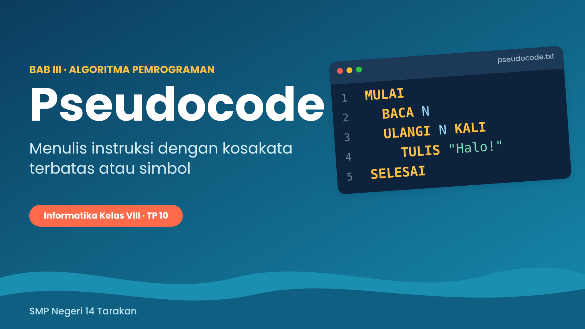
Target belajarmu hari ini
Di akhir pertemuan, kamu mampu menuliskan sekumpulan instruksi dengan kosakata terbatas atau simbol dalam format pseudocode (itu TP 10 kita). Biar lebih jelas, kamu akan bisa:
- menjelaskan apa itu pseudocode dan kenapa penting,
- memakai 8 kosakata pseudocode dengan benar,
- menulis pseudocode untuk urutan, pilihan, dan perulangan,
- menelusuri jalannya program dengan tabel jejak, dan
- menerjemahkan blok Blockly menjadi pseudocode (dan sebaliknya).
1. Misi Kita: Mading Digital Piket
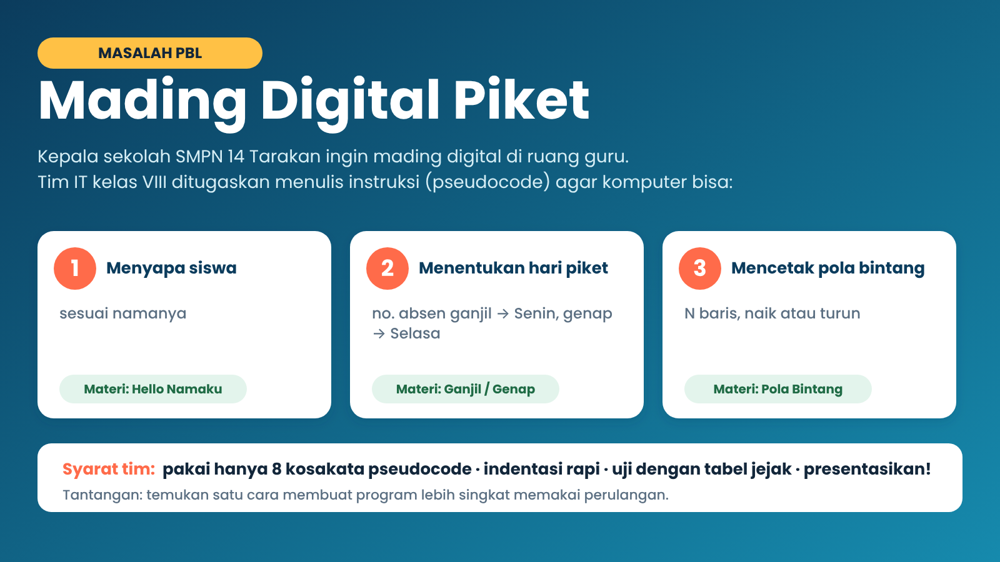
Kepala sekolah ingin ada mading digital di ruang guru. Timmu ditugaskan menuliskan instruksi supaya komputer bisa menyapa siswa, menentukan hari piket, dan mencetak hiasan bintang. Kamu belum perlu bisa coding. Kamu cukup bisa menulis instruksi yang jelas.
2. Pemanasan: Bebas vs. Terbatas
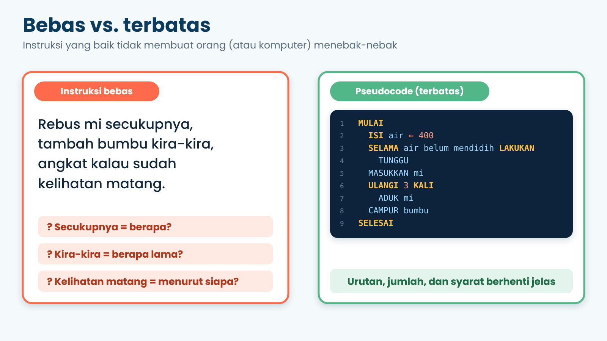
Bandingkan dua cara menyuruh memasak mi. Cara kiri memakai kata “secukupnya”, “kira-kira”, dan “kelihatan matang”. Menurut siapa? Berapa lama? Komputer tidak bisa menebak! Cara kanan memakai kata kunci tegas (SELAMA, ULANGI 3 KALI) sehingga siapa pun yang membacanya mengerjakan hal yang sama.
3. Apa Itu Pseudocode?
“Pseudo” artinya semu atau tiruan, dan “code” artinya kode. Jadi pseudocode itu kode-kodean: mirip kode program, tapi tidak harus mengikuti aturan bahasa pemrograman tertentu dan tidak dijalankan komputer. Fungsinya sebagai jembatan antara ide di kepala dan program yang sebenarnya.
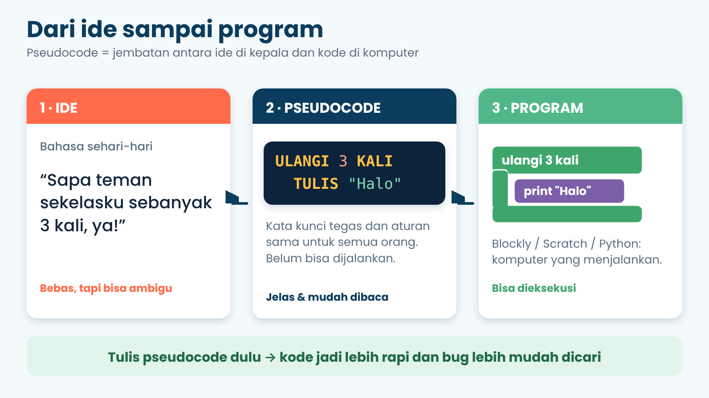
| Ciri pseudocode | Artinya buat kamu |
|---|---|
| Kosakata terbatas | Hanya memakai kata kunci tertentu, jadi tidak ada tafsir ganda. |
| Mudah dibaca manusia | Teman satu timmu langsung paham tanpa perlu belajar bahasa pemrograman. |
| Tidak terikat bahasa | Hari ini kamu tulis pseudocode, besok bisa jadi Blockly, Scratch, atau Python. |
| Terstruktur | Ada awal, akhir, dan indentasi (menjorok ke dalam) supaya rapi. |
4. Delapan Kosakata Pseudocode
Inilah “kamus mini” yang akan kita pakai. Hanya 8, jadi gampang dihafal! Kolom paling kanan menunjukkan padanannya di Blockly, supaya kamu bisa membandingkan dengan yang sudah kamu pelajari.
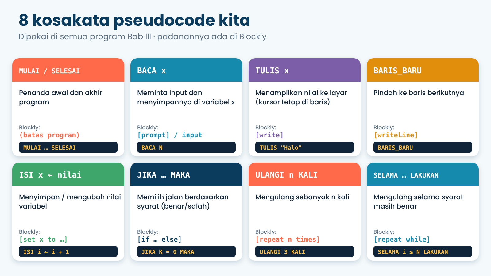
| Kata kunci | Fungsi | Contoh |
|---|---|---|
MULAI / SELESAI | Penanda awal dan akhir program | MULAI … SELESAI |
BACA x | Meminta input, lalu menyimpannya di variabel x | BACA N |
TULIS x | Menampilkan nilai ke layar (kursor tetap di baris itu) | TULIS "Halo" |
BARIS_BARU | Memindahkan kursor ke baris berikutnya | BARIS_BARU |
ISI x ← nilai | Menyimpan atau mengubah nilai variabel | ISI i ← i + 1 |
JIKA … MAKA … JIKA TIDAK … | Memilih jalan berdasarkan syarat | JIKA K = 0 MAKA |
ULANGI n KALI | Mengulang sebanyak n kali | ULANGI 3 KALI |
SELAMA … LAKUKAN | Mengulang selama syarat masih benar | SELAMA i ≤ N LAKUKAN |
Simbol yang boleh dipakai
- Hitung-hitungan:
+-*(kali)/(bagi)MOD(sisa bagi). - Membandingkan:
=≠<>≤≥. - Panah
←artinya “isi dengan”. JadiISI i ← 5dibaca: i diisi dengan 5.
5. Aturan Main Menulis Pseudocode
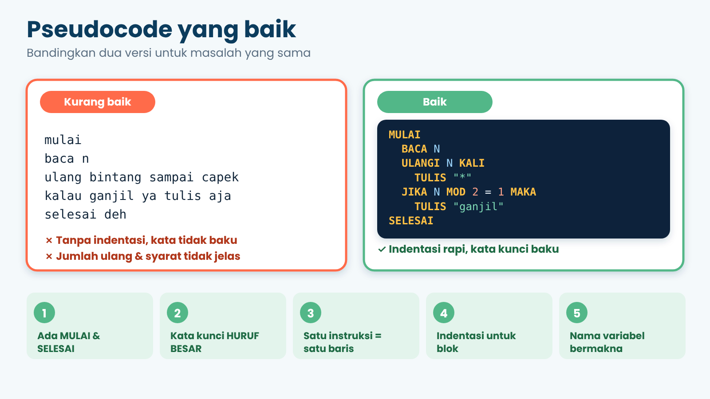
- Selalu mulai dengan
MULAIdan akhiri denganSELESAI. - Tulis kata kunci dengan HURUF BESAR supaya mudah dikenali.
- Satu instruksi = satu baris.
- Pakai indentasi (geser 2 spasi ke dalam) untuk isi
ULANGI,SELAMA, danJIKA. - Beri nama variabel yang bermakna, misalnya
namaSiswa, bukanxatauzzz.
6. Variabel: Kotak yang Diberi Nama
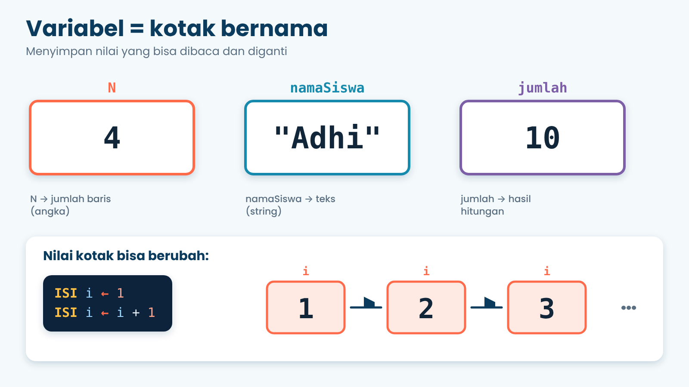
Bayangkan variabel sebagai kotak bernama yang menyimpan satu nilai. Nilainya boleh diganti kapan saja. Variabel bisa menyimpan tiga jenis data: teks (misalnya "Adhi"), bilangan (misalnya 4), dan boolean (benar atau salah).
7. Contoh 1: Hello Namaku (Urutan)
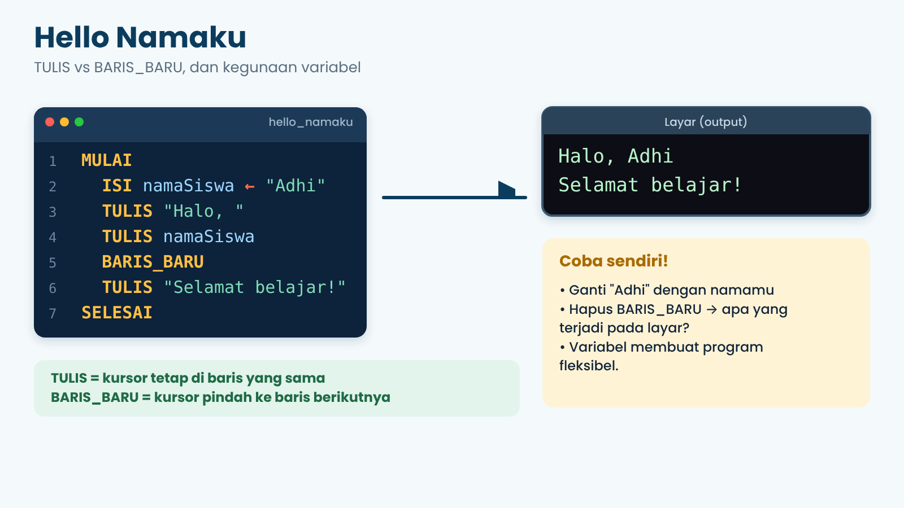
Program ini berjalan berurutan dari atas ke bawah. Perhatikan: setelah TULIS "Halo, " dan TULIS namaSiswa, kursor masih di baris yang sama, jadi hasilnya satu kalimat. Barulah BARIS_BARU memindahkan kursor ke baris berikutnya.
8. Blok Blockly ⇄ Pseudocode
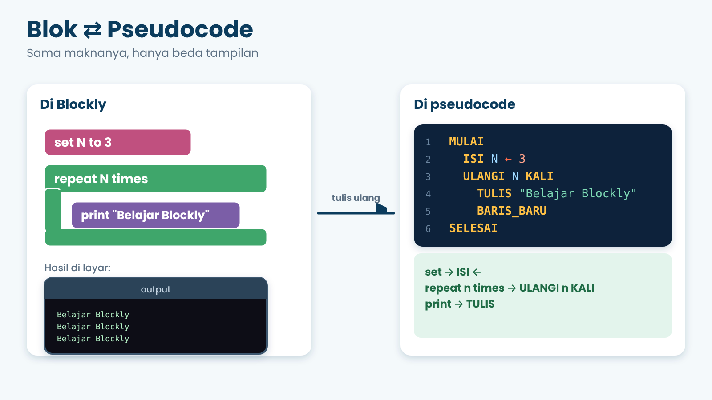
| Blockly | Pseudocode |
|---|---|
set N to 3 | ISI N ← 3 |
print "..." / write | TULIS "..." |
writeLine | BARIS_BARU |
repeat n times | ULANGI n KALI |
repeat while | SELAMA … LAKUKAN |
if … else | JIKA … MAKA … JIKA TIDAK … |
9. Tiga Jurus Menyusun Instruksi
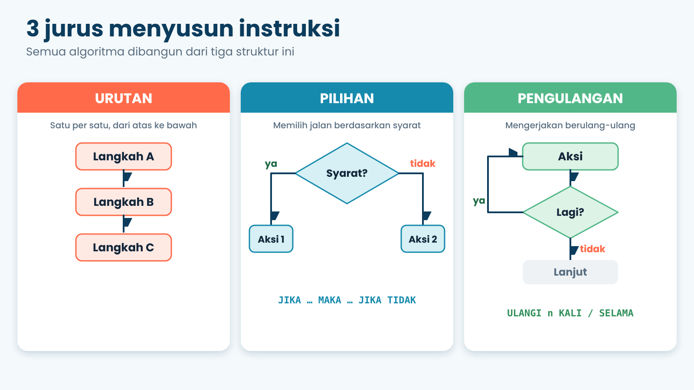
Semua algoritma, dari yang sederhana sampai game, disusun dari tiga jurus ini: urutan (satu per satu), pilihan (memilih jalan berdasarkan syarat), dan pengulangan (mengerjakan berulang-ulang). Sekarang kita coba dua jurus berikutnya.
10. Contoh 2: Ganjil atau Genap? (Pilihan)
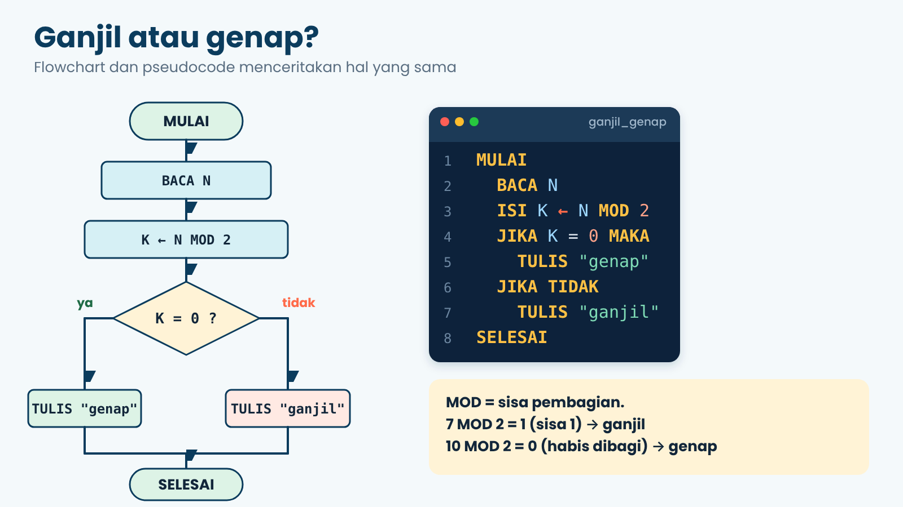
Komputer memutuskan dengan memeriksa apakah suatu syarat bernilai benar atau salah. Di sini kita memakai MOD, yaitu sisa pembagian. Bilangan genap habis dibagi 2 (sisanya 0), bilangan ganjil bersisa 1.
| N | N MOD 2 | K = 0 ? | Output |
|---|---|---|---|
| 10 | 0 | benar | genap |
| 7 | 1 | salah | ganjil |
| 24 | 0 | benar | genap |
11. Contoh 3: Pola Bintang (Perulangan)
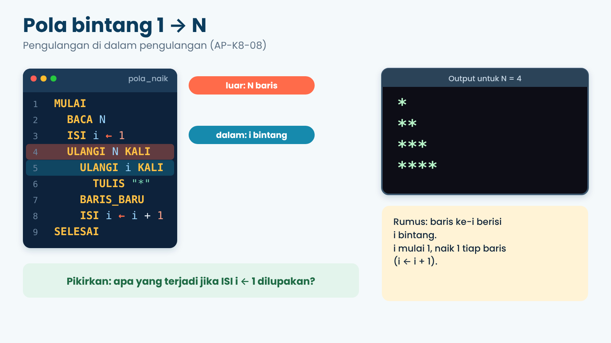
Ada dua perulangan di sini. Perulangan luar mengatur jumlah baris (N baris). Perulangan dalam mencetak bintang sebanyak i pada tiap baris. Variabel i adalah nomor baris sekaligus jumlah bintang, dan nilainya naik 1 setiap baris.
Jejak programnya (tabel jejak)
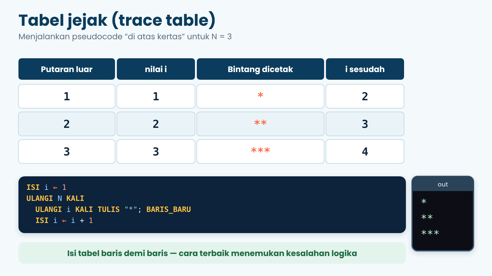
Tabel jejak adalah cara menjalankan pseudocode dengan tanganmu sendiri. Catat nilai tiap variabel di setiap langkah. Cara ini paling ampuh untuk mencari kesalahan logika.
Versi kebalikan: N sampai 1
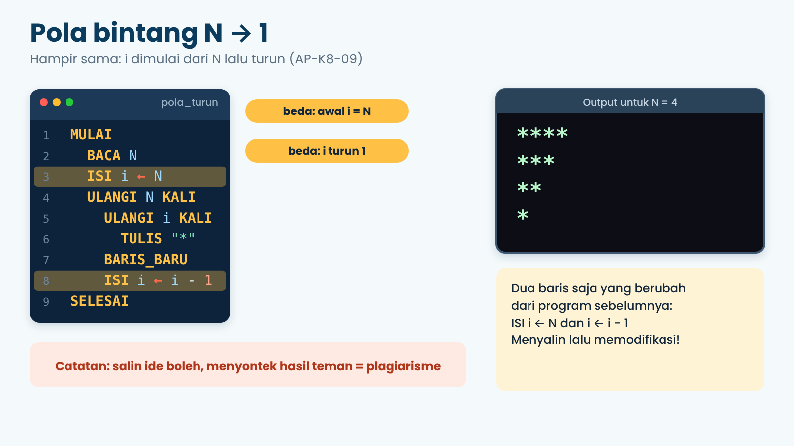
Hanya dua baris yang berubah: nilai awal i menjadi N, dan i berkurang 1 tiap baris. Menyalin ide lalu memodifikasinya itu boleh banget. Menyontek hasil teman namanya plagiarisme, ya!
12. Contoh 4: Menjumlah dengan SELAMA
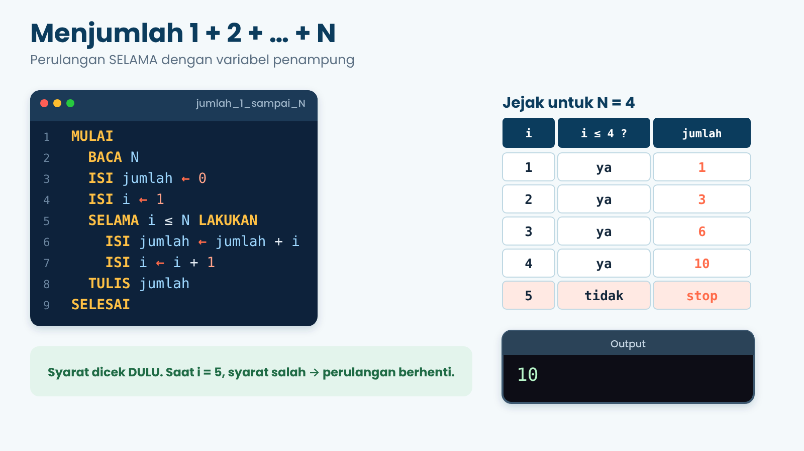
ULANGI n KALI dipakai kalau kamu tahu persis berapa kali mengulang. SELAMA dipakai kalau berhenti bergantung pada syarat. Pada SELAMA, syarat dicek lebih dulu setiap putaran. Pada contoh ini, saat i menjadi 5, syarat i ≤ 4 salah, sehingga perulangan berhenti.
13. Latihan Tanpa Komputer: Robot Piket
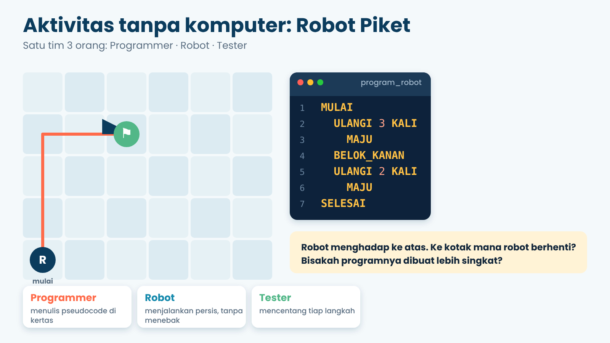
Dalam satu tim bertiga: Programmer menulis pseudocode di kertas, Robot menjalankan persis seperti yang tertulis (tidak boleh menebak!), dan Tester mencentang tiap langkah. Setelah itu tukar peran. Seru dan melatih ketelitian!
14. Misi: Cari Bug-nya!
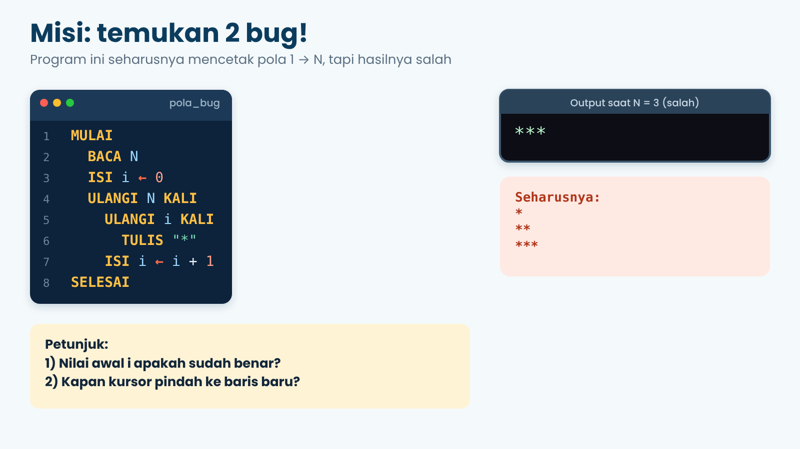
Coba kerjakan sendiri dulu pakai tabel jejak. Jawabannya ada di bagian bawah halaman ini kalau kamu sudah menyerah (atau sudah yakin).
Simulator Pseudocode
Tulis pseudocode-mu di kotak kiri, isi input di kanan (satu nilai per baris, sesuai urutan BACA), lalu tekan Jalankan. Pakai indentasi 2 spasi dan 8 kosakata baku. Pilih contoh di bawah, lalu coba ubah-ubah!
Tekan “Jalankan”…
Kuis Cek Pemahaman
10 soal pilihan ganda. Pilih jawabanmu, lalu tekan Periksa jawaban.
15. Rangkuman & Cek Dirimu
- Pseudocode = cara menulis algoritma dengan kosakata terbatas, mudah dibaca manusia, tidak dijalankan komputer.
- Ada 8 kosakata:
MULAI/SELESAI,BACA,TULIS,BARIS_BARU,ISI ←,JIKA…MAKA…JIKA TIDAK,ULANGI n KALI,SELAMA…LAKUKAN. - Tulis dengan rapi: huruf besar untuk kata kunci, satu instruksi satu baris, ada indentasi.
- Semua algoritma tersusun dari urutan, pilihan, dan pengulangan.
- Tabel jejak membantu kamu menguji dan memperbaiki pseudocode.
| Pengalaman saya | Sudah bisa | Masih perlu belajar |
|---|---|---|
| Menjelaskan apa itu pseudocode | ☐ | ☐ |
| Memakai 8 kosakata dengan benar | ☐ | ☐ |
| Menulis pseudocode pilihan (JIKA) | ☐ | ☐ |
| Menulis pseudocode perulangan | ☐ | ☐ |
| Membuat tabel jejak | ☐ | ☐ |
| Mengubah blok Blockly ke pseudocode | ☐ | ☐ |
Mau lanjut? Pengayaan
- Main Blockly Games: https://blockly.games (latihan menyusun blok perintah).
- Coba Blockly Demo untuk berlatih blok
repeat,if, danprint: https://blockly-demo.appspot.com/static/demos/code/index.html - Tantangan: ubah pola bintang supaya naik lalu turun (jadi bentuk “ketupat” setengah).